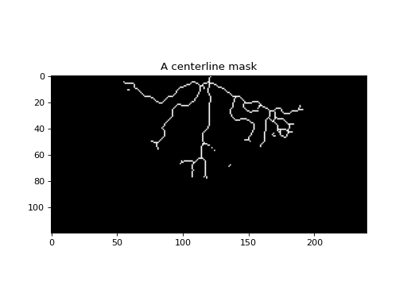

deltametrics.mask.CenterlineMask¶
-
class
deltametrics.mask.CenterlineMask(channelmask, is_mask=False, method='skeletonize', **kwargs)¶ Identify channel centerline mask.
A centerline mask object, provides the location of channel centerlines.
Examples
- Initialize the centerline mask
>>> channelmask = dm.mask.ChannelMask(rcm8cube['velocity'][-1, :, :], rcm8cube['eta'][-1, :, :]) >>> clmsk = dm.mask.CenterlineMask(channelmask)
- Visualize the mask
>>> clmsk.show()
-
__init__(channelmask, is_mask=False, method='skeletonize', **kwargs)¶ Initialize the CenterlineMask.
Initialization of the centerline mask object requires a 2-D channel mask (can be the
ChannelMaskobject or a binary 2-D array).- Parameters
channelmask (
ChannelMaskor ndarray) – The channel mask to derive the centerlines fromis_mask (bool, optional) – Whether the data in
arris already a binary mask. Default value is False. This should be set to True, if you have already binarized the data yourself, using custom routines, and want to just store the data in the CenterlineMask object.method (str, optional) – The method to use for the centerline mask computation. The default method (‘skeletonize’) is a morphological skeletonization of the channel mask.
- Other Parameters
kwargs (optional) – Keyword arguments for the ‘rivamap’ functionality.
Methods
__init__(channelmask[, is_mask, method])Initialize the CenterlineMask.
compute_centerlinemask(**kwargs)Compute the centerline mask.
show(**kwargs)Show the mask.
Attributes
Values of the mask object.
Binary mask values.
-
compute_centerlinemask(**kwargs)¶ Compute the centerline mask.
Function for computing the centerline mask. The default implementation is a morphological skeletonization operation using the skimage.morphology.skeletonize function.
Alternatively, the method of centerline extraction based on non-maxima suppression of the singularity index, as described in 3 can be specified. This requires the optional dependency RivaMap.
- 3(1,2,3)
Isikdogan, Furkan, Alan Bovik, and Paola Passalacqua. “RivaMap: An automated river analysis and mapping engine.” Remote Sensing of Environment 202 (2017): 88-97.
- Other Parameters
minScale (float, optional) – Minimum scale to use for the singularity index extraction, see 3
nrScales (int, optional) – Number of scales to use for singularity index, see 3
nms_threshold (float between 0 and 1, optional) – Threshold to convert the non-maxima suppression results into a binary mask. Default value is 0.1 which means that the lowest 10% non-maxima suppression values are ignored when making the binary centerline mask.
-
data¶ Values of the mask object.
In setter, we should sanitize the inputs (enforce range 0-1) and convert everything to uints for speed and size.
- Type
ndarray
-
mask¶ Binary mask values.
Read-only mask attribute.
- Type
ndarray
-
show(**kwargs)¶ Show the mask.
Passes **kwargs to
matplotlib.imshow.
{kind=link}
{kind=link}